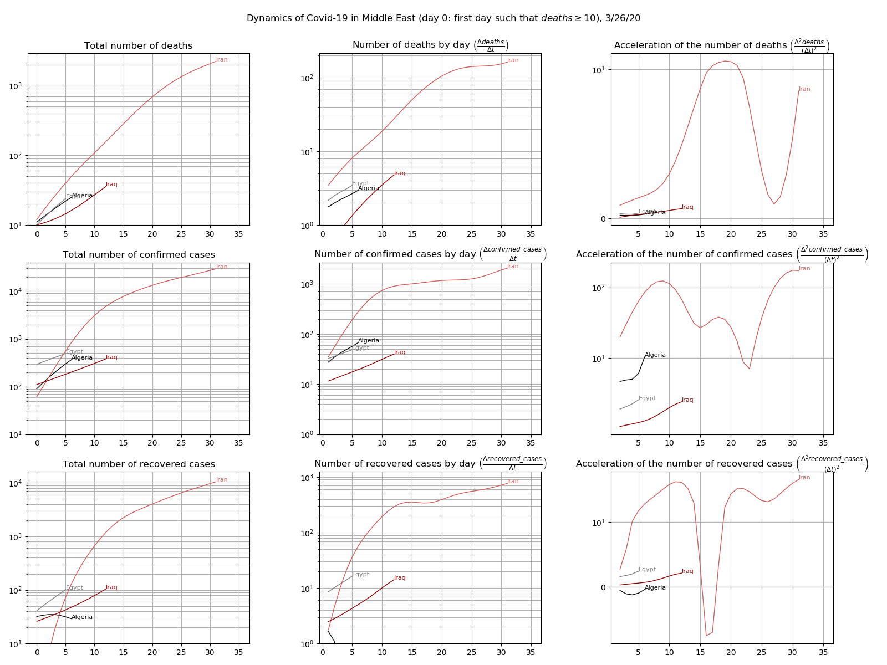

Graphs for the evolution of COVID-19
Based on data provided by JHU CSSE, one provides a series of 3x3 graphs:
- line 1 corresponds to the number of deaths; line 2 to the number of confirmed cases ; line 3 to the number of recovered cases ;
- column 1 gives the figures, column 2 the speed, and column 3 the acceleration ;
- each curve in these graphs corresponds to one country or region.
Worldwide
by continents

10 countries with the most fatalities

Asia

Europe

Middle East

North America

South America